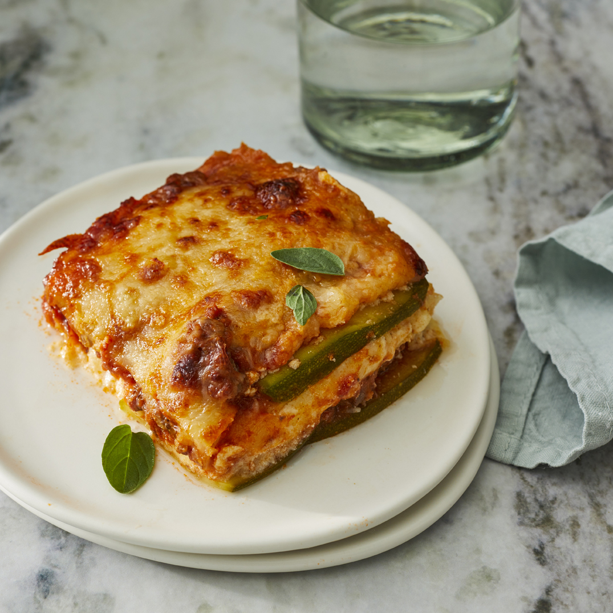

Lasagna Recipe

Description
This is a pretty low calorie dish. Hopefully tasty
Ingredients
- Cooking spray
- 1.5 Large zucchinis, thinly sliced lengthwise
- 1 tablespoon olive oil
- 1 pound ground beef
- 1.5 cup low-carb marinara sauce
- 2 tbsp salt, divided
- 1 tsp dried oregano
- 0.5 tsp ground black pepper
- 8 ounce ricotta cheese
- 1 egg
- 2 cups shredded mozzarella
- 0.5 tsp ground nutmeg
- 0.25 cup ground parmesan
- Preheat oven to 375 degrees F (190 degrees C). Grease an 8-inch baking dish with cooking spray.
- Pat dry zucchini slices with a paper towel to get rid of excess moisture
- Heat olive oil in a saucepan over medium-high heat. Add ground beef; cook until browned,
5 to 8 minutes. Add marinara sauce, 1 teaspoon salt, oregano, and pepper; simmer for 10 minutes.
- Combine remaining 1 teaspoon salt, ricotta cheese, egg, and nutmeg in a bowl; mix well.
- Make 1 layer of zucchini slices in the
prepared baking dish. Cover with 1/2 of the sauce. Add another layer of zucchini slices. Spread ricotta mixture on top.
Sprinkle with 1 cup mozzarella cheese. Add another layer of zucchini slices; cover with the remaining sauce
and top with 1 cup mozzarella cheese and Parmesan cheese. Cover baking dish with aluminum foil.
- Bake in the preheated oven for 30 minutes. Remove aluminum foil and bake until top is golden, about 15 minutes more.